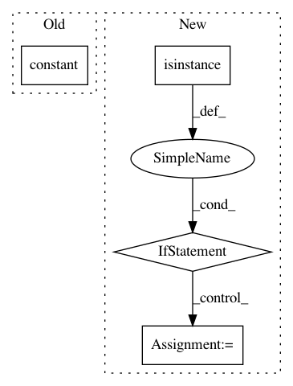

060c9f88fc890bce5657fdf2241e910e9291438b,tf_agents/bandits/agents/greedy_reward_prediction_agent_test.py,,_get_initial_and_final_steps,#Any#Any#,65
Before Change
name="step_type"),
tf.constant(rewards, dtype=tf.float32, name="reward"),
tf.constant(1.0, dtype=tf.float32, shape=[batch_size], name="discount"),
tf.constant(observations + 100.0, dtype=tf.float32, name="observation"))
return initial_step, final_step
After Change
def _get_initial_and_final_steps(observations, rewards):
batch_size = tf.nest.flatten(observations)[0].shape[0]
if isinstance(observations, np.ndarray):
observations = tf.constant(
observations, dtype=tf.float32, name="observation")
initial_step = ts.TimeStep(
tf.constant(
ts.StepType.FIRST,
dtype=tf.int32,
In pattern: SUPERPATTERN
Frequency: 3
Non-data size: 4
Instances
Project Name: tensorflow/agents
Commit Name: 060c9f88fc890bce5657fdf2241e910e9291438b
Time: 2020-04-01
Author: bartok@google.com
File Name: tf_agents/bandits/agents/greedy_reward_prediction_agent_test.py
Class Name:
Method Name: _get_initial_and_final_steps
Project Name: NifTK/NiftyNet
Commit Name: d2bf5afe5895aaee163bd5efc1dc8acb9d8d59af
Time: 2017-11-05
Author: wenqi.li@ucl.ac.uk
File Name: niftynet/application/label_driven_registration.py
Class Name: RegApp
Method Name: connect_data_and_network
Project Name: reinforceio/tensorforce
Commit Name: 82a059d89d5f5ebc77c6a3f0b8ac4072a3979104
Time: 2018-08-03
Author: alexkuhnle@t-online.de
File Name: tensorforce/core/networks/layer.py
Class Name: Nonlinearity
Method Name: __init__